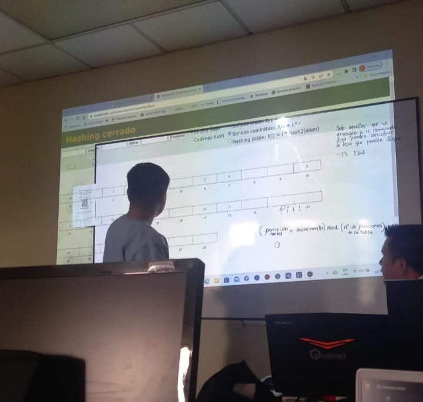

Quien soy
Soy Johan Romo, un apasionado del desarrollo de interfaces, el diseño y la programación. Actualmente, estoy inmerso en el mundo del software como estudiante de esta apasionante carrera. Mi fascinación por la creación de experiencias digitales me impulsa constantemente a explorar nuevas tecnologías y técnicas para mejorar la interacción entre humanos y computadoras. Desde muy temprana edad, descubrí mi pasión por la informática y la tecnología. A medida que fui profundizando en este campo, me di cuenta de que mi verdadero interés radica en la creación de interfaces intuitivas y atractivas que mejoren la vida de las personas. Me encanta fusionar mis habilidades de diseño con mis conocimientos de programación para dar vida a proyectos innovadores y funcionales. Mi enfoque en el desarrollo de interfaces va más allá de simplemente escribir código. Me esfuerzo por entender las necesidades y deseos de los usuarios para diseñar soluciones que no solo sean visualmente atractivas, sino también prácticas y accesibles. Como estudiante de software, estoy constantemente aprendiendo y creciendo. Cada proyecto en el que me embarco es una oportunidad para expandir mis habilidades y conocimientos, ya sea a través del diseño de una nueva interfaz de usuario, la implementación de algoritmos complejos o la resolución de problemas en colaboración con otros colegas.
